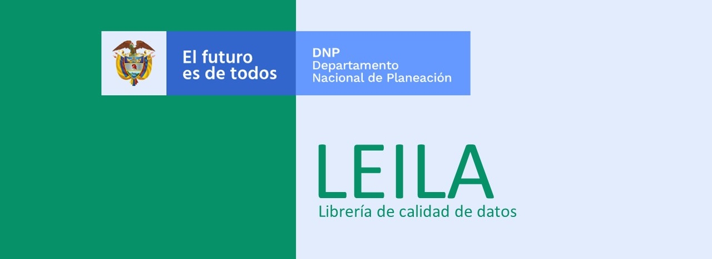

LEILA - Librería de calidad de datos

La librería surge como resultado de un proyecto relacionado con realizar análisis descriptivos de la calidad de la información cargada al portal de Datos Abiertos de Colombia, durante el desarrollo del proyecto se identifica el interés por parte de diferentes actores en el proyecto al igual que el beneficio potencial de tener a la mano una librería que facilite describir la calidad de una base de datos, lo cual motivó a realizar la implementación de la librería.
Esta página contiene toda la información relacionada con la librería, en el panel de navegación se tiene acceso a las diferentes secciones, las cuales cubren la instalación de la librería, la documentación de los módulos y funciones, ejemplos y demás información de interés.